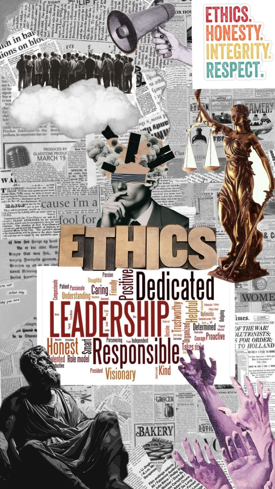
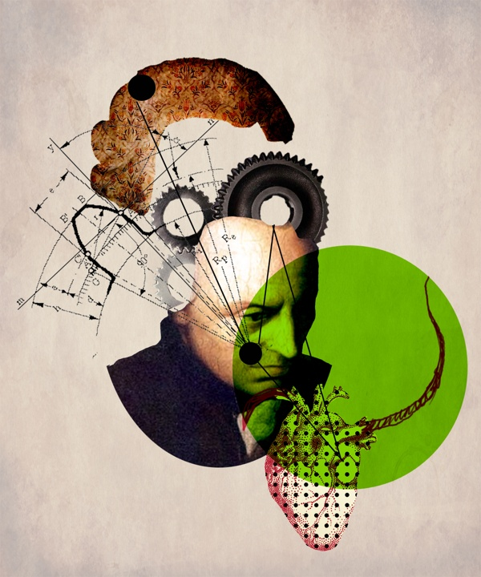
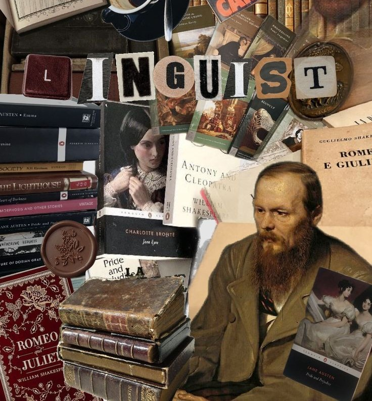
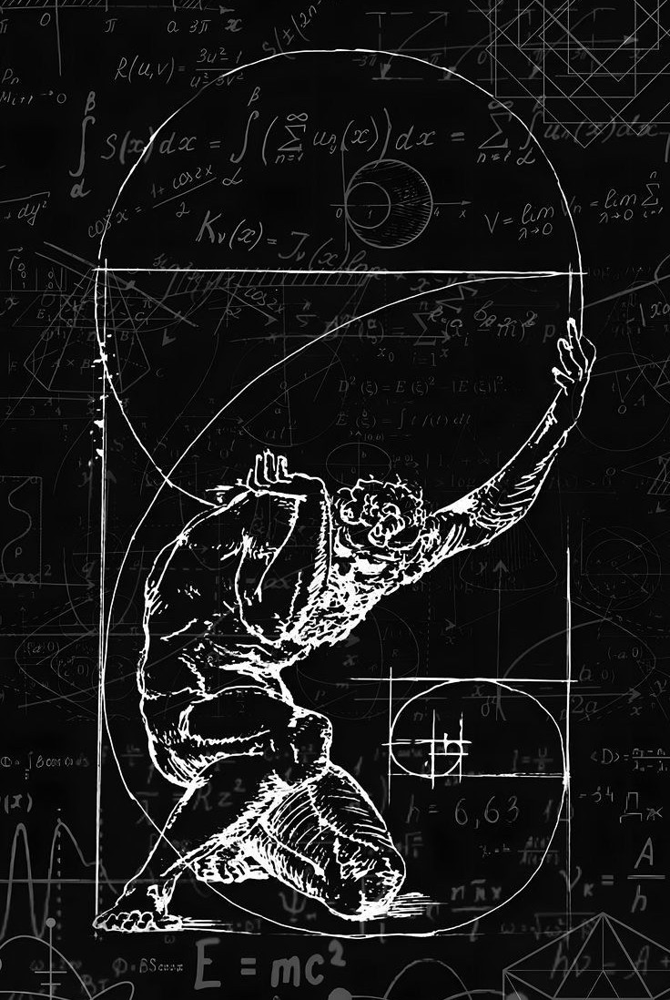
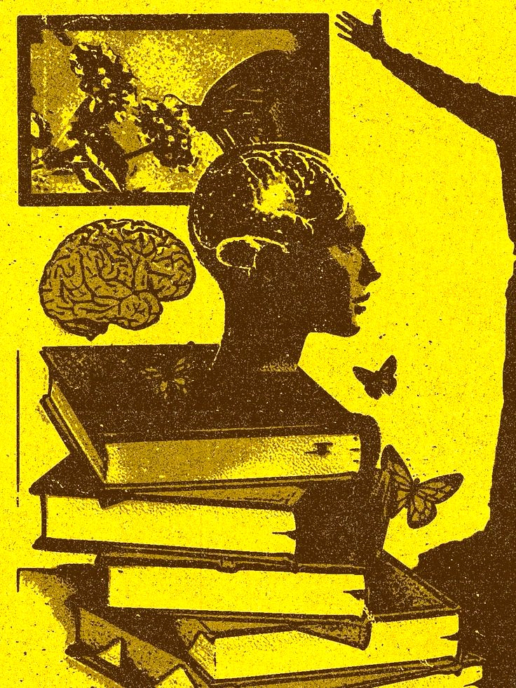

Branches of Philosophy
Every branch of philosophy explores a different question about existence, knowledge, morality, beauty and human life.
Why Are There Different Branches of Philosophy?
Philosophy is the systematic study of fundamental questions about reality, knowledge, truth, existence, morality, reasoning, beauty, society, and human life. Because philosophical inquiry addresses such a wide range of questions, it is commonly organized into different branches of philosophy, with each branch concentrating on a particular area of investigation. The major branches include metaphysics, epistemology, ethics, logic, and aesthetics, while related fields such as political philosophy, philosophy of mind, philosophy of language, philosophy of science, philosophy of law, philosophy of religion, philosophy of mathematics, philosophy of education, and philosophy of technology develop these questions in more specialized directions.
Each branch of philosophy begins with a distinctive set of fundamental questions. Metaphysics asks what exists and what reality is ultimately like, including questions about being, identity, causation, time, space, possibility, and the relationship between mind and body. Epistemology examines knowledge, belief, justification, evidence, truth, certainty, and the limits of human understanding. Ethics investigates how we ought to live, what makes actions right or wrong, and what justice, virtue, responsibility, and moral value mean. Logic studies correct reasoning, argument, validity, inference, and proof, while aesthetics explores beauty, art, artistic value, interpretation, taste, and aesthetic experience.
The branches of philosophy are not isolated subjects. Philosophical questions frequently cross the boundaries between different fields because problems about reality, knowledge, values, language, and human action are deeply interconnected. Questions about consciousness, for example, involve both metaphysics and philosophy of mind, while questions about scientific knowledge connect epistemology with philosophy of science. Questions about justice and political authority bring together ethics and political philosophy, and questions about legal rights and punishment connect philosophy of law with ethics and political philosophy. This interconnected structure is one reason why studying philosophy as a whole provides a broader understanding than studying any single philosophical field in isolation.
The organization of philosophy into branches also makes it easier to study philosophical problems systematically while preserving their connections to one another. Some fields focus primarily on what is true, others on how we know what is true, others on how we should act, and others on how we should reason, interpret language, understand society, or evaluate art. These distinctions are useful for learning and research, but they are not rigid boundaries. Philosophers have often worked across several branches at once, showing that philosophical inquiry is better understood as a connected network of questions than as a collection of completely separate subjects.
Understanding the different branches of philosophy is therefore a useful starting point for anyone who wants to learn philosophy systematically. Whether you are asking what is reality, how knowledge is possible, what makes an action morally right, what constitutes a valid argument, what makes something beautiful, how the mind relates to the brain, how language acquires meaning, or what makes political authority legitimate, there is a philosophical field that provides concepts and methods for investigating the question. The sections that follow introduce the major branches of philosophy, explain their central questions and concepts, and show how they connect with one another across the wider history of philosophical thought.
The Tree of Philosophy
Philosophy is often compared to a great tree. From a single trunk grow many branches, each exploring a different aspect of reality, knowledge, values, beauty, reasoning, and human existence. Together, these branches form one interconnected pursuit—the search for wisdom and truth.
🌳 Philosophy
- Ethics — Studies morality, right and wrong, and how we should live. READ MORE
- Metaphysics — Explores reality, existence, time, space, and the nature of being. READ MORE
- Epistemology — Investigates knowledge, belief, truth, and how we know what we know. READ MORE
- Logic — Examines valid reasoning, arguments, and critical thinking. READ MORE
- Aesthetics — Focuses on beauty, art, creativity, and artistic experience. READ MORE
Fields of Philosophy
Philosophy extends into many specialized fields, each applying philosophical methods to a particular area of human knowledge, experience, society, or intellectual inquiry. These fields examine questions about education, history, language, law, mathematics, mind, politics, religion, and science. Although each field has its own subject matter, they remain deeply connected to the broader philosophical questions of truth, reality, knowledge, value, reasoning, and human existence.
🌳 Fields of Philosophy
- Philosophy of Education — Examines the aims, methods, values, curriculum, authority, and purposes of education and learning. READ MORE
- Philosophy of History — Investigates historical knowledge, causation, interpretation, narrative, objectivity, progress, agency, and the meaning of historical development. READ MORE
- Philosophy of Language — Explores meaning, reference, truth, communication, interpretation, speech acts, language use, and the relationship between language and thought. READ MORE
- Philosophy of Law — Examines the nature of law, legal authority, justice, rights, punishment, legal obligation, interpretation, and the relationship between law and morality. READ MORE
- Philosophy of Mathematics — Investigates mathematical objects, numbers, proof, truth, infinity, mathematical knowledge, and the foundations and reality of mathematics. READ MORE
- Philosophy of Mind — Explores consciousness, mental states, perception, intentionality, personal identity, free will, and the relationship between mind and body. READ MORE
- Political Philosophy — Examines justice, liberty, equality, rights, political authority, democracy, sovereignty, power, citizenship, and the legitimate organization of political society. READ MORE
- Philosophy of Religion — Investigates God, faith, reason, religious experience, evil, miracles, the afterlife, religious pluralism, and the relationship between religion and science. READ MORE
- Philosophy of Science — Examines scientific knowledge, evidence, explanation, causation, scientific reasoning, objectivity, realism, theory change, and the nature and limits of scientific inquiry. READ MORE
Core Branches of Philosophy
Philosophy is divided into several major branches, each dedicated to answering a different set of fundamental questions about ourselves, the world, and existence. Explore each branch below to discover its purpose, key questions, and significance.

🧠 Ethics
Ethics (moral philosophy) investigates what makes actions right or wrong, what moral duties we have, and what constitutes a good human life. It surveys major normative frameworks—consequentialism (assessing actions by their outcomes), deontology (assessing actions by duties and rights), and virtue ethics (focusing on character and flourishing)—and shows how each framework responds to dilemmas like conflicting duties or trade-offs between individual rights and collective welfare. Ethics also addresses metaethical questions about the nature and objectivity of moral claims (moral realism vs expressivism), and applied areas such as medical, environmental, and business ethics where theory informs policy and professional practice. Contemporary ethics integrates moral psychology and empirical findings about human bias to create more realistic and actionable moral guidance.
Main Question
What should we do, and why are some actions morally right or wrong?
Famous Philosophers
- Aristotle
- Immanuel Kant
- John Stuart Mill
- David Hume
- John Rawls
🌌 Metaphysics
Metaphysics explores the basic structure of reality: what exists, what kinds of things there are (objects, properties, events), and how entities relate through identity, causation, and persistence over time. It investigates ontology (which categories are fundamental), theories of substance and property (substance vs bundle views), and accounts of change and persistence (endurantism vs perdurantism). Metaphysics also treats modality (possibility and necessity), the metaphysics of space and time, and the implications of scientific theories for metaphysical commitments. In recent work metaphysicians interact closely with philosophy of science and logic, refining concepts like grounding, emergence, and reduction.
Main Question
What exists and what is the nature of those things?
Famous Philosophers
- Aristotle
- Leibniz
- Immanuel Kant
- W. V. O. Quine
- Martin Heidegger


📚 Epistemology
Epistemology studies the nature, sources, and limits of knowledge and justified belief. It asks how knowledge differs from true belief, analyzes justification (foundationalism, coherentism, reliabilism), and responds to skeptical challenges that question whether we can know anything at all. Central problems include the implications of Gettier cases for analyses of knowledge and the epistemology of testimony, memory, and perception. Contemporary epistemology also covers social and formal topics—epistemic injustice, disagreement, and Bayesian models—that shape scientific practice, legal standards, and public discourse about evidence and credibility.
Main Question
What is knowledge, how is it acquired, and what justifies our beliefs?
Famous Philosophers
- Plato
- René Descartes
- David Hume
- Edmund Gettier
- Timothy Williamson
⚖ Logic
Logic is the systematic study of valid inference, argument form, and the principles that govern correct reasoning. It includes formal systems (propositional and predicate logic, modal and higher-order logics, proof theory and model theory) that precisely characterize validity, as well as informal logic that evaluates everyday arguments and fallacies. Non-classical logics (intuitionistic, paraconsistent, relevance) broaden our tools when classical assumptions fail, and formal logic underlies work in mathematics, computer science, and linguistics (automated theorem proving, type theory, formal semantics). Logic thus supplies both normative rules for reasoning and practical techniques for constructing and checking arguments.
Main Question
What rules and structures make an inference valid, and how can we model reasoning precisely?
Famous Philosophers & Logicians
- Aristotle
- Gottlob Frege
- Bertrand Russell
- Kurt Gödel
- Alfred Tarski


🎨 Aesthetics
Aesthetics investigates the nature of beauty, artistic value, and our emotional and cognitive responses to art and aesthetic experiences. It examines criteria for evaluating artworks (formal properties, expression, historical context), theories about what counts as an artwork, and how interpretation and cultural institutions shape artistic meaning. Central issues include debates over aesthetic objectivity versus subjectivity, the relationship between art and morality, and the role of the critic and the audience. Modern aesthetics extends into media studies and everyday aesthetics, exploring how technology, museums, and global cultures transform tastes and the production of art.
Main Question
What is beauty or artistic value, how do we evaluate art, and how do context and experience shape judgment?
Famous Philosophers
- Alexander Baumgarten
- David Hume
- Immanuel Kant
- Arthur Danto
- Clive Bell
Fields of Philosophy
While the fundamental branches explore the core questions of philosophy, specialized fields focus on particular areas of human experience, society, and knowledge. These fields apply philosophical methods to subjects such as politics, religion, science, language, law, and the mind.
🏛 Political Philosophy
Political philosophy asks how we should organize collective life: what institutions best secure justice, rights, liberty, equality and the common good. Historically rooted in Plato and Aristotle, the field ranges from social contract theories (Hobbes, Locke, Rousseau) to modern debates about distributive justice (Rawls), republican freedom, and deliberative democracy. Contemporary concerns include global justice, feminism and intersectionality in politics, public reason, and the legitimacy of state authority.
Main Question
How should political institutions be organized and justified to secure justice and freedom?
Famous Philosophers
- Plato
- Aristotle
- Thomas Hobbes
- John Locke
- Jean-Jacques Rousseau
- John Rawls
- Hannah Arendt

🧩 Philosophy of Mind
Philosophy of mind explores consciousness, mental states, perception, intentionality and the mind–body relation. It asks whether mental states are physical processes (physicalism), non-physical substances (dualism), or higher-level emergent properties. Key topics include qualia (the subjective feel of experience), the hard problem of consciousness, representational content, and the nature of belief, desire, and intentionality. Contemporary work ties philosophy to cognitive science, neuroscience and AI.
Main Question
What is consciousness and how does the mind relate to the physical brain?
Famous Philosophers
- René Descartes
- Gilbert Ryle
- Thomas Nagel
- Daniel Dennett
- David Chalmers
- Patricia Churchland
🗣 Philosophy of Language
Philosophy of language studies meaning, reference, truth, and how words connect to the world and to speaker intentions. Topics include sense and reference, speech-act theory, pragmatics (implicature), rules of meaning, and the role of context in interpretation. The field overlaps with logic, epistemology, and philosophy of mind; historically it shaped the “linguistic turn” and continues to inform work in semantics, cognitive science, and communication.
Main Question
How do words and sentences connect to meaning, reference, and use?
Famous Philosophers & Works
- Gottlob Frege — sense & reference
- Ludwig Wittgenstein — language games
- Saul Kripke — Naming and Necessity

🔬 Philosophy of Science
Philosophy of science examines scientific method, explanation, theory confirmation, model-building, and the aims and limits of scientific inquiry. It asks what makes a theory scientific, how paradigm change works (Kuhn), and how evidence supports or refutes theories (Popper, Bayesian confirmation). Contemporary work addresses realism vs. anti-realism, the role of models and simulations, values in science, and interdisciplinarity with statistics and philosophy of biology and physics.
Main Question
What counts as scientific knowledge and how are scientific theories justified?
Famous Philosophers
- Karl Popper
- Thomas Kuhn
- Imre Lakatos
- Paul Feyerabend
- Bas van Fraassen
- Philip Kitcher
⚖️ Philosophy of Law
Philosophy of law (jurisprudence) asks what law is, what justifies legal authority, and how legal systems relate to morality and political power. Major debates contrast legal positivism (law as socially established rules) with natural law (moral foundations of law), along with theories of rights, interpretation (textualism, originalism, intentionalism), and critiques from critical legal studies. It is inherently practical: theories of law shape how courts reason about statutes and rights.
Main Question
What is law and what justifies legal authority and obligation?
Famous Philosophers
- H. L. A. Hart
- Lon L. Fuller
- John Austin
- Ronald Dworkin
- Jeremy Bentham

∞ Philosophy of Mathematics
Philosophy of mathematics examines the nature, foundations, truth, and reality of mathematics. It asks whether mathematical objects such as numbers, sets, and geometric structures exist independently of human minds, whether mathematical truths are discovered or constructed, and how abstract mathematical knowledge is possible. Major positions include Platonism, logicism, formalism, intuitionism, structuralism, nominalism, and fictionalism, while debates over proof, infinity, and mathematical practice connect mathematics with metaphysics, epistemology, and logic.
Main Question
What are mathematical objects, and how is mathematical knowledge and truth possible?
Famous Philosophers
- Plato
- Gottlob Frege
- Bertrand Russell
- David Hilbert
- L. E. J. Brouwer
🎓 Philosophy of Education
Philosophy of education examines the aims, values, methods, and purposes of education and asks what it means to educate a person well. It considers questions about knowledge, learning, intellectual development, moral formation, autonomy, authority, curriculum, equality, and the role of education in society. Major approaches range from child-centered and experiential education to critical and civic education, with thinkers such as Rousseau, Dewey, and Freire challenging traditional assumptions about teaching, discipline, learning, and educational authority.
Main Question
What should education aim to achieve, and what makes an educational practice genuinely valuable?
Famous Philosophers
- Plato
- Jean-Jacques Rousseau
- John Dewey
- Paulo Freire
- John Locke

🏛 Philosophy of History
Philosophy of history examines the nature of historical knowledge, explanation, interpretation, causation, and the meaning of historical development. It asks how historians establish knowledge of the past, whether historical accounts can be objective, how individual actions interact with social structures, and whether history exhibits progress or direction. Its major debates include historical explanation and understanding, hermeneutics, narrative and historiography, historical causation, agency, memory, and theories of progress associated with thinkers such as Hegel and Marx.
Main Question
How can we understand the past, and does history have a meaning, pattern, or direction?
Famous Philosophers
- Giambattista Vico
- Johann Gottfried Herder
- G. W. F. Hegel
- Karl Marx
- R. G. Collingwood
🕊 Philosophy of Religion
Philosophy of religion analyzes arguments about the existence and nature of the divine, faith and reason, religious experience, and the problem of evil. It evaluates classical arguments (ontological, cosmological, teleological), discusses the epistemic status of religious belief, and examines religious language, pluralism, and the relationship between religion and morality. The field draws on metaphysics, epistemology and ethics to address how (and whether) religious claims can be justified.
Main Question
Does God (or the divine) exist, and how should religious belief be justified?
Famous Philosophers
- Augustine
- Thomas Aquinas
- St. Anselm
- David Hume
- Alvin Plantinga
Comparing the Major Branches
| Branch | Main Question | Example Philosopher |
|---|---|---|
| Ethics | How should we live? | Aristotle |
| Metaphysics | What is reality? | Plato |
| Epistemology | What is knowledge? | John Locke |
| Logic | How should we reason? | Aristotle |
| Aesthetics | What is beauty? | Immanuel Kant |
| Political Philosophy | How should legacy inequalities factor into intergenerational distributive justice? | Elizabeth Anderson |
| Philosophy of Mind | Is consciousness reducible to physical processes? | David Chalmers |
| Philosophy of Language | How do context and speaker intentions determine what is said? | Paul Grice |
| Philosophy of Science | What distinguishes science from non-science? | Karl Popper |
| Philosophy of Law | What is the relationship between law and morality? | H. L. A. Hart |
| Philosophy of Religion | How should we understand the problem of evil? | Epicurus |
Quote of the Page
“The beginning is the most important part of the work.”
How the Branches Connect
Although philosophy is divided into different branches, they constantly overlap. Ethics relies on logic to build strong arguments. Political philosophy uses ethics to discuss justice. Philosophy of science depends on epistemology to explain how scientific knowledge is justified. Metaphysics asks questions about reality that influence philosophy of mind and religion.
Together, these branches form one interconnected discipline whose goal is to better understand ourselves, our societies, and the universe.
Explore the major philosophical schools that shaped different traditions and eras. From the ancient schools of Greece and India to later developments in Eastern, Islamic, Enlightenment, and modern philosophy, each school offers a distinct way of understanding reality, knowledge, ethics, and human life.
Explore Schools of Philosophy